Les huit formes
Chaque forme a trois rangs : Initié (25 points), Avancé (50) puis Maître (100). Il faut le rang précédent pour acheter le suivant. Niman n'a qu'un rang ; Juyo au sabre double s'arrête à Avancé. Apprendre toutes les formes coûte 1 175 points. Elles s'achètent auprès du Maître d'armes.
Shii-Cho
Forme fondamentale : larges balayages pour affronter plusieurs adversaires à la fois.

Avancé · 50 pts
Makashi
Escrime élégante et précise, pensée pour le duel au sabre.
Soresu
Défense serrée et économe, idéale pour renvoyer les tirs de blaster.

Avancé · 50 pts
Ataru
Acrobaties et assauts rapides portés par la Force.
Shien / Djem So
Puissance et contre-attaques, renvoi agressif des tirs.

Avancé · 50 pts
Niman
Synthèse équilibrée des formes précédentes.
Juyo
La forme la plus agressive et imprévisible, réservée aux combattants aguerris.

Initié · 25 pts
Juyo (sabre double)
Juyo adapté au sabre double.
Se battre au sabre
Le coût de la garde
Sans Force, la garde ne pare plus rien. Viser la lame adverse au bon moment déclenche une parade parfaite. Alterne attaque et défense, et pense à la Méditation pour récupérer.